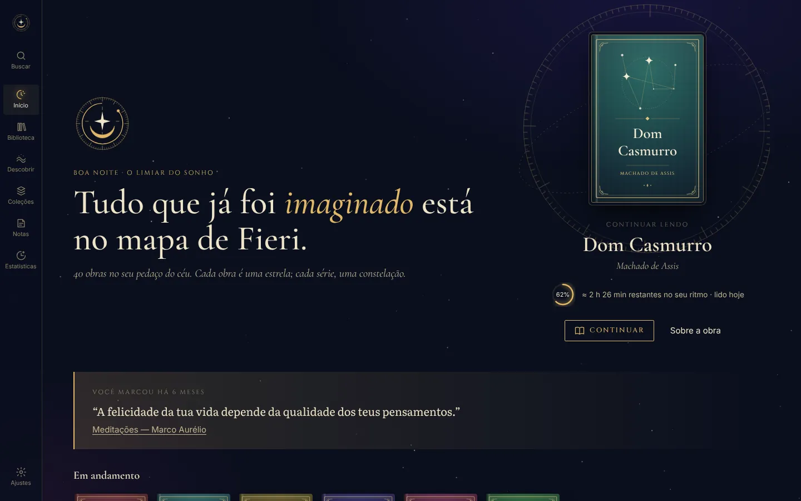
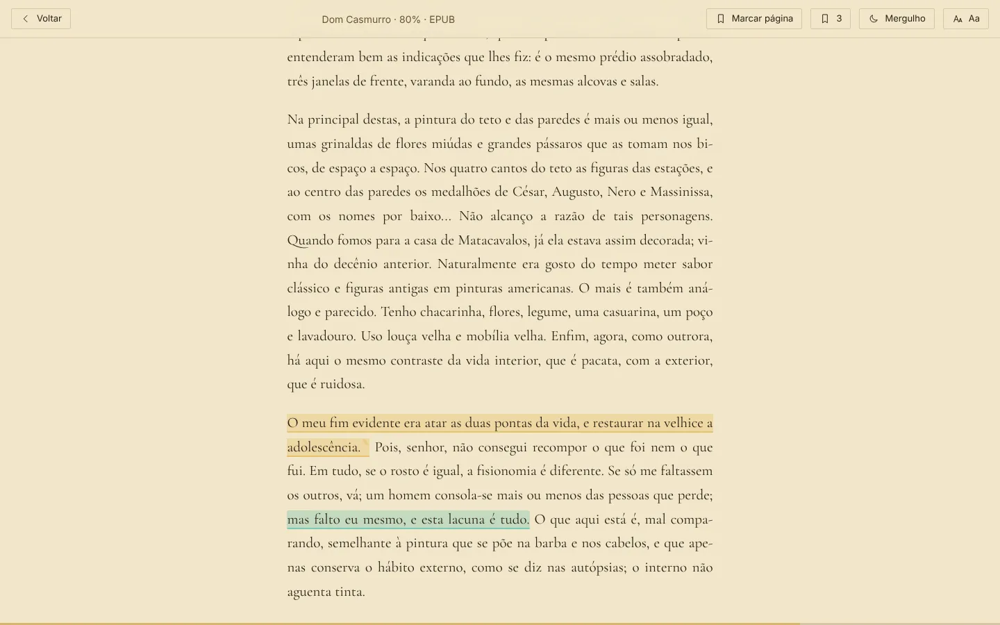
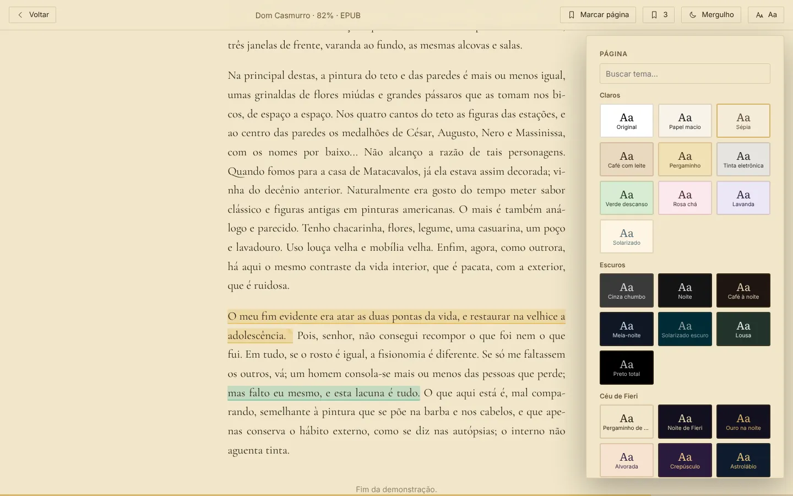
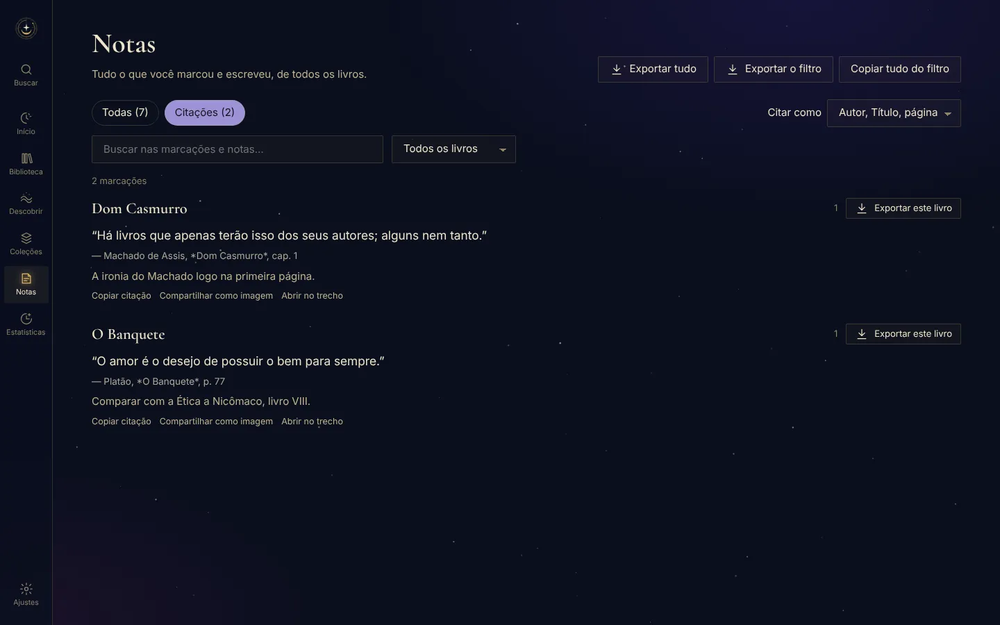
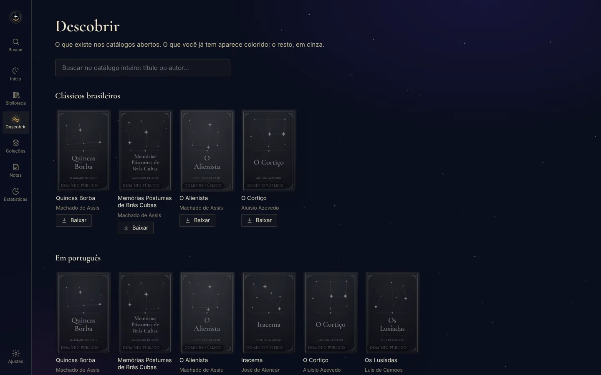
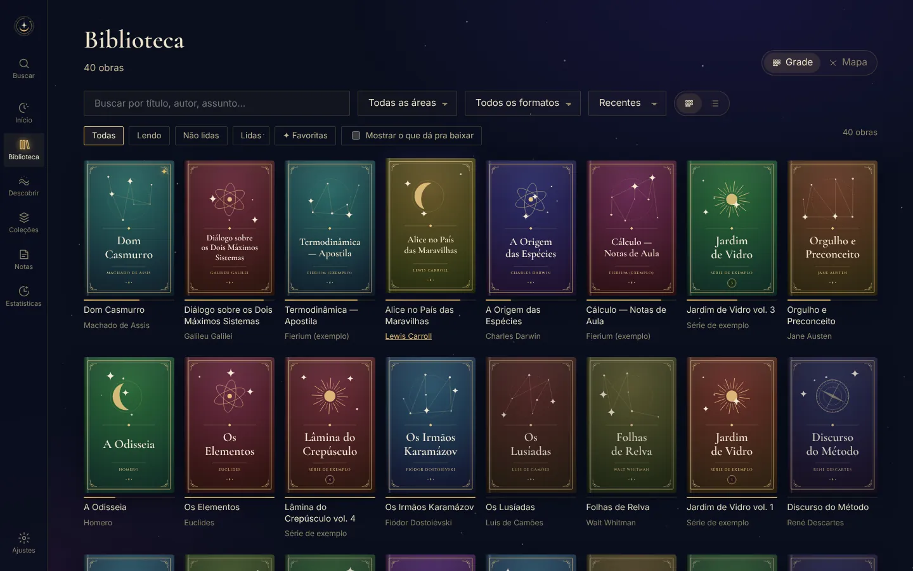
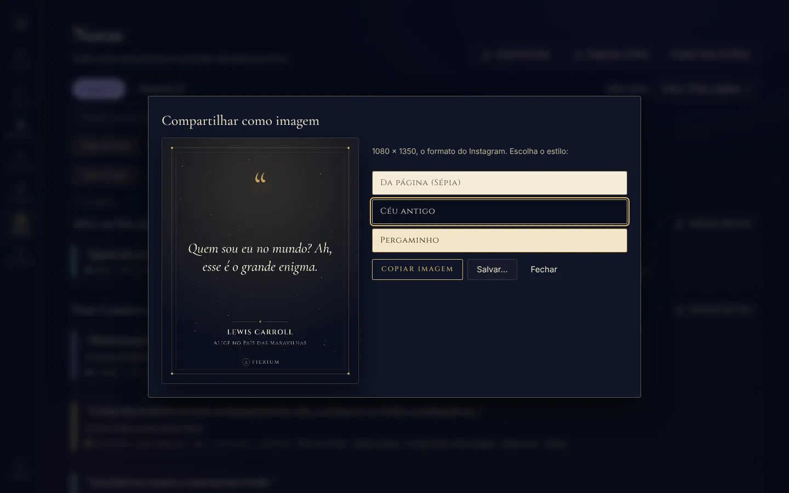

Biblioteca pessoal · Windows e Linux
Tudo que já foi imaginado está no mapa de Fieri.
Os seus livros, o seu ritmo, o seu céu. Um leitor bonito que guarda tudo só com você.
Grátis, sem conta, funciona sem internet.

Biblioteca pessoal · Windows e Linux
Os seus livros, o seu ritmo, o seu céu. Um leitor bonito que guarda tudo só com você.
Grátis, sem conta, funciona sem internet.

O que ele faz
Seis coisas que o Fierium faz bem, sem pedir cadastro nem nuvem.
I
Os dois formatos no mesmo leitor, com o progresso salvo e o tempo que falta no seu ritmo. Uma obra pode ter várias edições e formatos juntos. O Fierium nunca altera os seus arquivos.

II
Papel, sépia, noite, tinta, e o céu de Fieri. Cor do papel e da letra livres, e você salva os seus próprios temas. Vale pro PDF e pro EPUB, e há modo mergulho pra sumir com tudo.

III
Marque em cores, escreva notas e ligue um trecho a outro. Tudo vira uma página de citações que você copia em texto simples ou em ABNT, ou exporta em Markdown.

IV
Em Descobrir aparecem obras em domínio público do Projeto Gutenberg, em cinza. Um clique em “Baixar e ler” e a obra vira colorida na sua biblioteca. A internet só é usada quando você pede, e dá pra desligar.

V
Livro sem capa não fica feio: o Fierium desenha uma, com a moldura e a constelação do gênero da obra. Organize em coleções, busque por tudo e continue de onde parou.

VI
Escolheu uma frase que não quer esquecer? Vire imagem 1080×1350, o tamanho do Instagram, em três estilos, pronta pra copiar ou salvar.

Em 17 segundos
Privacidade
Instalou, abriu, leu. Ninguém pede e-mail, senha ou cadastro.
Ler, anotar e buscar não precisam de internet. Só o catálogo de clássicos usa a rede, quando você pede.
Notas, marcações e progresso ficam em arquivos da sua máquina. Nada vai pra nuvem.
O Fierium só lê os seus livros. Nunca muda nem apaga o que está na sua pasta.
Baixar
Sempre a versão mais nova, direto da página de Releases do projeto. Depois de instalado, ele avisa sozinho quando sai versão nova.
-setup.exe e dê dois cliques.Os botões levam ao arquivo da versão mais nova; se não abrir direto, use a página de Releases.